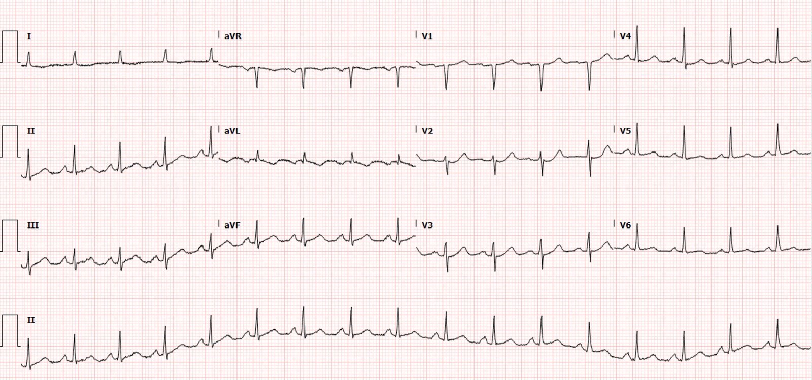
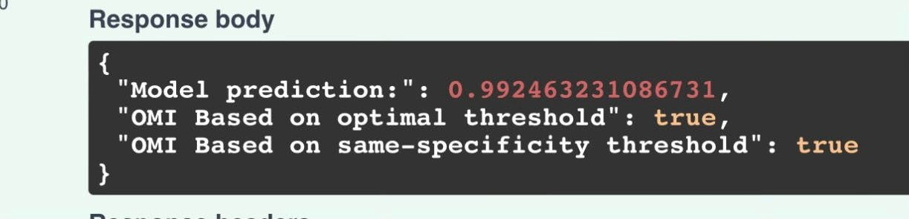
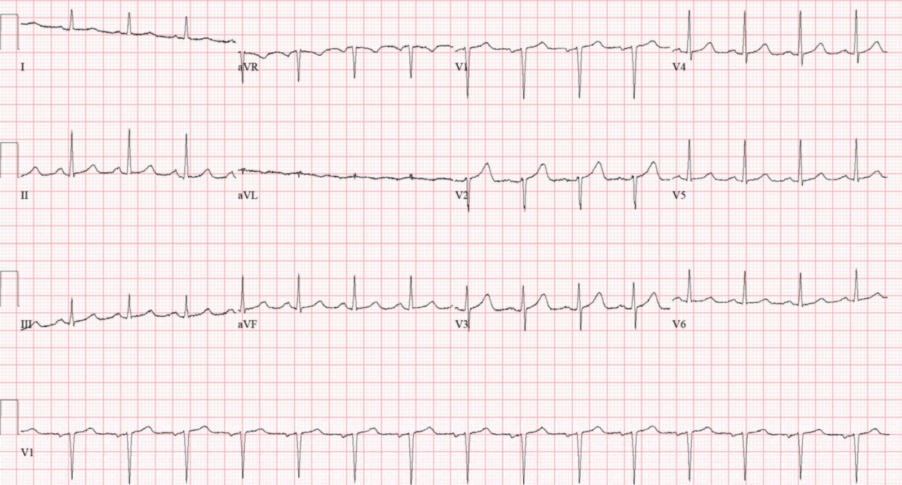
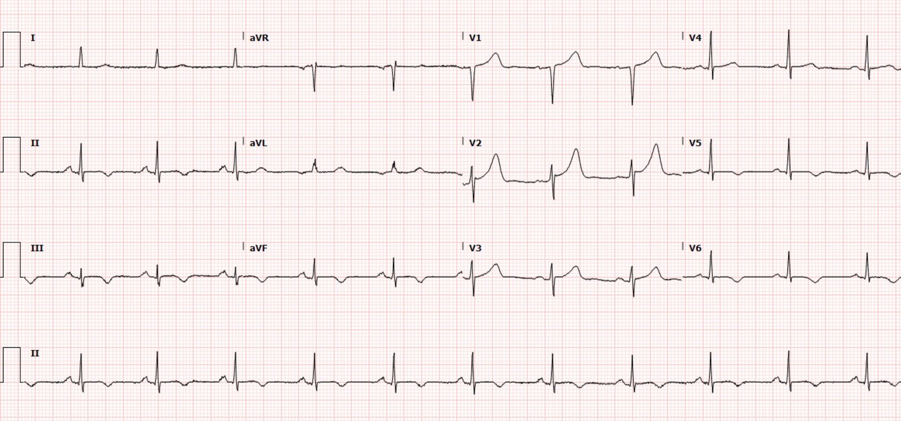
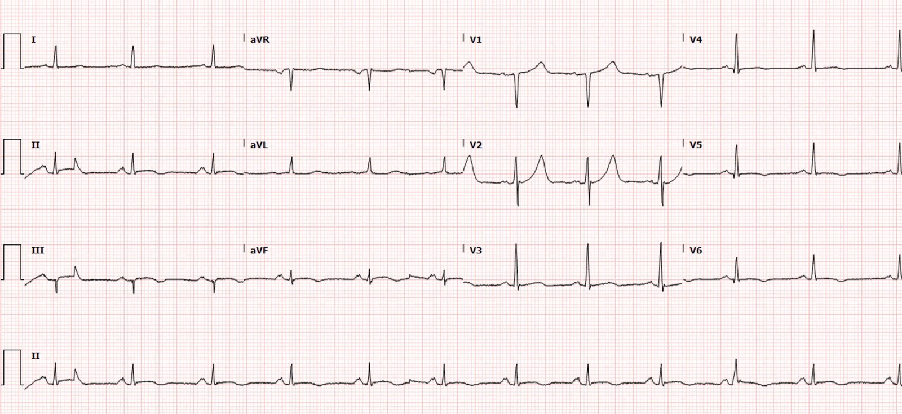
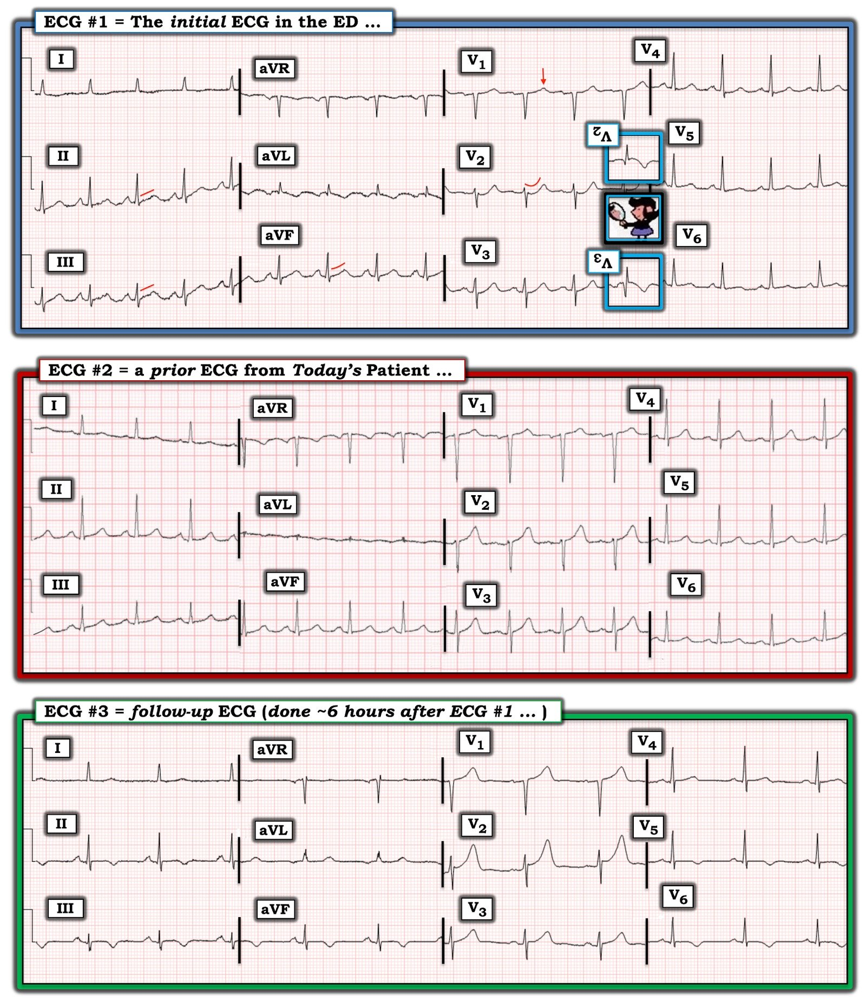

06/02/2023 — Một người đàn ông ở độ tuổi 60 bị đau ngực cấp
Bản dịch tiếng Việt của bài "A man in his 60s with acute chest pain" – Dr. Smith’s ECG Blog. Giữ nguyên toàn bộ 7 hình ảnh của bản gốc.
Gửi bởi một người giấu tên, viết bởi Pendell Meyers
Một người đàn ông ở độ tuổi 60 đến viện vì đau ngực cấp kèm vã mồ hôi. Ông đã được đội cấp cứu ngoài viện (EMS) cho dùng aspirin và nitroglycerin, triệu chứng có cải thiện phần nào. Các dấu hiệu sinh tồn trong giới hạn bình thường. Đây là điện tâm đồ lúc phân loại (triage) của ông:
2045:


Điện tâm đồ này kín đáo, nhưng đủ để chẩn đoán OMI dưới-sau. QRS bình thường, thế nhưng ở aVL, phức bộ QRS nhỏ dương bình thường lại được theo sau bởi một sóng T đảo ngược có thể tích lớn không tương xứng, soi gương (reciprocal) với sóng T ở chuyển đạo III, vốn có lẽ là sóng T tối cấp nếu so với điện tâm đồ nền hiện có. Củng cố cho điều này là ST chênh xuống kín đáo ở V2-V3, không phù hợp với một phức bộ QRS bình thường, và trong bối cảnh hội chứng vành cấp (ACS), chúng tôi đã chứng minh rằng dấu hiệu này khá đặc hiệu cho OMI thành sau. Gộp lại, các dấu hiệu kín đáo này hỗ trợ và xác nhận lẫn nhau: OMI dưới-sau cho đến khi chứng minh được điều ngược lại.
Tôi gửi điện tâm đồ này, không kèm thông tin gì, cho Dr. McLaren, và ông trả lời ngay lập tức: “RCA?” (ý ông là “OMI dưới-sau, vậy có lẽ là tắc RCA?”). Tôi đồng ý rằng nhìn chung RCA là động mạch có khả năng cao nhất cấp máu cho thành dưới và thành sau.
Mô hình AI OMI của PM Cardio (hiện đang được phát triển) được cho xem điện tâm đồ này mà không kèm thông tin gì, và nó chẩn đoán OMI với độ tin cậy 99.2463…%:


Có một điện tâm đồ cũ:


Điện tâm đồ này bị đọc sai là không có dấu hiệu thiếu máu cục bộ.
Troponin I độ nhạy cao (hs-troponin) ban đầu trả về 1,684 ng/L (giá trị bình thường ở nam giới là dưới 20 ng/L đối với xét nghiệm này).
“Đã trao đổi với bác sĩ tim mạch trực, hiện không còn giường ở các cơ sở khác trong hệ thống, nên bệnh nhân sẽ được giữ lại đây. Bệnh nhân được truyền heparin, sẽ dùng thuốc chẹn beta tĩnh mạch và thuốc chẹn beta đường uống để kiểm soát tần số tim và huyết áp. Nhập khoa nội để đánh giá và xử trí tiếp.”
Chẩn đoán: Nhồi máu cơ tim cấp không ST chênh lên (Non-STEMI, hay NSTEMI)
Troponin lần hai trả về vào khoảng 0200: 15,894 ng/L
0245 (không rõ còn đau hay không)


Sóng T đảo ngược ở các chuyển đạo dưới và bên
Sóng T dương soi gương ở aVL và V2
0400


Troponin các lần sau:
21,781 ng/L
22,818 ng/L
Không đo thêm troponin nào nữa.
Không ghi thêm điện tâm đồ nào nữa.
Thông tim được làm vào khoảng 4 giờ chiều hôm sau:
Tổn thương thủ phạm cấp: LCX hẹp 99%, dòng chảy TIMI 1, đã đặt stent
Ngoài ra LAD hẹp 50%, dòng chảy TIMI 3, cũng đã được đặt stent
Và tắc RCA mạn tính với tuần hoàn bàng hệ (báo cáo thông tim không có thông tin về nguồn của dòng bàng hệ, ví dụ dòng bàng hệ đến từ LAD hay LCX).
Siêu âm tim:
EF 40%
Giảm động mức độ vừa vùng cơ tim sau-bên
Những điểm cần học:
OMI có thể kín đáo, nhưng vẫn đủ để chẩn đoán.
Đôi khi sóng T tối cấp dễ được nhận ra là tối cấp hơn khi so sánh với các điện tâm đồ cũ hiện có.
Trong bối cảnh hội chứng vành cấp, ST chênh xuống tối đa ở V1-V4 (chứ không phải V5-V6) mà không do bất thường QRS thì đặc hiệu cho OMI thành sau.
Ít nhất một nửa số OMI do LCX bị bỏ sót. Chúng ta biết rằng các ca NSTEMI được xử trí OMI muộn phải chịu tỷ lệ tử vong ngắn hạn và dài hạn gần gấp đôi so với các ca NSTEMI không có OMI.
Trí tuệ nhân tạo có thể được huấn luyện để nhận ra OMI kín đáo

==================================
BÌNH LUẬN CỦA TÔI bởi KEN GRAUER, MD (6/2/2023):
==================================
Điện tâm đồ ban đầu trong ca hôm nay bị đọc sai là “Không có dấu hiệu thiếu máu cục bộ”. Mục đích bình luận của tôi là xem lại cách tiếp cận điện tâm đồ ban đầu này, vốn lẽ ra phải được nhận ra (theo lời Dr. Meyers) là “OMI dưới-sau cấp cho đến khi chứng minh được điều ngược lại“.
Tôi chọn tái hiện 3 bản ghi đầu tiên của ca hôm nay trong Hình 1 vì:
- Với bệnh sử đau ngực mới xuất hiện kèm vã mồ hôi ở người đàn ông khoảng 60 tuổi này — chẩn đoán OMI cấp lẽ ra không được bỏ sót ngay từ điện tâm đồ ban đầu.
- Như Dr. Meyers đã nêu — Những lo ngại mà các dấu hiệu điện tâm đồ trong điện tâm đồ #1 gợi ra — đã được xác nhận rõ ràng khi so sánh bản ghi ban đầu này với điện tâm đồ cũ.
- Điện tâm đồ theo dõi (ghi ~6 giờ sau điện tâm đồ #1) — ủng hộ nghi ngờ của tôi về trình tự sinh lý của các diễn biến trong OMI đang tiến triển ở ca hôm nay (và đưa ra lời giải thích khả dĩ cho việc vì sao ST chênh lên rõ rệt không thấy được trên điện tâm đồ #1).
Tầm quan trọng của bệnh sử:
Như đã nêu ở trên — đau ngực trong ca hôm nay khởi phát cấp. Mặc dù chúng ta không được cung cấp thời điểm cụ thể bệnh nhân bắt đầu đau ngực, cũng không biết mức độ đau ngực trong khoảng thời gian từ lúc khởi phát triệu chứng cho đến khi đội cấp cứu ngoài viện đến — Chúng ta có được biết rằng cơn đau ngực của ông đã giảm sau khi dùng nitroglycerin do đội cấp cứu ngoài viện cho.
- Như đã nhấn mạnh nhiều lần trong Dr. Smith’s ECG Blog — thời điểm khởi phát tắc mạch vành cấp thường tương ứng với thời điểm xuất hiện ST chênh lên ở vùng giải phẫu do mạch “thủ phạm” cấp máu.
- Động mạch bị tắc cấp có thể tái thông tự phát trước khi được điều trị tích cực. Hiện tượng tái tưới máu tự phát này thường đi kèm với sự thuyên giảm triệu chứng (hoặc ít nhất là giảm mức độ đau ngực) — và — các đoạn ST chênh lên trở về phía đường nền.
- Sau một khoảng thời gian ngắn — các thay đổi ST-T do tái tưới máu xuất hiện (thường dưới dạng sóng T đảo ngược ở các chuyển đạo trước đó có ST chênh lên).
- Vì OMI thành sau được nhận ra nhờ ST chênh xuống ở chuyển đạo ngực, tối đa ở V2-V4 — các thay đổi ST-T do tái tưới máu của OMI thành sau thường biểu hiện bằng sóng T dương hơn ở chính những chuyển đạo trước đó có ST chênh xuống.
Điểm MẤU CHỐT: Tôi cho rằng lý do điện tâm đồ ban đầu hôm nay bị chẩn đoán sai — phần lớn là do các bác sĩ điều trị đã không nhận thức được trình tự sinh lý của các diễn biến nêu trên, vốn thường xảy ra trong quá trình OMI cấp đang tiến triển.
- Việc cơn đau ngực của bệnh nhân này giảm sau khi dùng NTG do đội cấp cứu ngoài viện cho — lẽ ra phải gợi ý rằng sẽ không có gì ngạc nhiên nếu các thay đổi ST-T tương đối khiêm tốn trên điện tâm đồ thứ 1 của bệnh nhân tại khoa cấp cứu (ED) (tức là đau ngực giảm sau NTG có thể báo hiệu sự khởi đầu của tái tưới máu tự phát). Kỳ vọng của chúng ta sẽ khác — NẾU ngược lại, cơn đau ngực của bệnh nhân đang tăng lên vào lúc ghi điện tâm đồ ban đầu (khi đó chúng ta sẽ chờ đợi các thay đổi ST-T cấp tăng thêm trên điện tâm đồ tiếp theo).
- Nếu người đọc ban đầu điện tâm đồ hôm nay nhận thức được trình tự sinh lý của các diễn biến nêu trên — họ đã ghi lại điện tâm đồ ban đầu trong vòng không quá 15-20 phút (thay vì chờ ~6 giờ mới làm việc đó). Với mức độ lệch đoạn ST khiêm tốn như vậy trên điện tâm đồ #1 — sẽ hoàn toàn không có gì ngạc nhiên nếu thấy các thay đổi ST-T do tái tưới máu đang tiếp diễn trên một điện tâm đồ ghi lại trong vòng 15-20 phút sau điện tâm đồ #1 — và khi đó, sự hiện diện của các thay đổi ST-T “động” (tức là đang tiến triển) sẽ xác nhận một biến cố cấp sớm gần 6 giờ trước khi điện tâm đồ thứ 2 cuối cùng mới được ghi.
- Thông tim mãi đến 4 giờ chiều ngày hôm sau mới được thực hiện. Vì một mạch bị tắc cấp đã tái tưới máu tự phát — cũng có thể dễ dàng tắc lại — nên thông tim kèm can thiệp mạch vành qua da (PCI) kịp thời đã được chỉ định trong ca hôm nay vào bất kỳ lúc nào sau khi ghi điện tâm đồ #1. Việc thông tim bị trì hoãn đến cuối ngày hôm sau là thêm một dấu hiệu cho thấy nhóm điều trị đã không nhận thức được trình tự sinh lý của các diễn biến gắn với OMI đang tiến triển.


SUY NGHĨ CỦA TÔI về 3 điện tâm đồ này:
Như Dr. Meyers đã nêu — điện tâm đồ #1 kín đáo, nhưng đủ để chẩn đoán OMI dưới-sau ở người đàn ông khoảng 60 tuổi này với đau ngực mới xuất hiện.
- Có nhịp nhanh xoang tần số 100-105/phút. Trục và các khoảng bình thường. Không lớn buồng tim. Có một sóng q rất nhỏ ở chuyển đạo aVL. Tăng tiến sóng R bình thường — với vùng chuyển tiếp (nơi sóng R trở nên cao hơn độ sâu của sóng S) xuất hiện bình thường giữa V3 và V4.
- Bất thường ST-T “bắt mắt” nhất nằm ở chuyển đạo V2. Như chúng tôi thường nhấn mạnh — đoạn ST rất thường hơi chênh lên ở các chuyển đạo trước V2 và V3. Việc nếu có thì lại là ST hơi chênh xuống ở chuyển đạo V2 rõ ràng là bất thường ở một bệnh nhân có đau ngực mới xuất hiện. Hình dạng lõm (scooped) của đoạn ST chênh xuống này ở chuyển đạo V2 cho ra một nghiệm pháp “soi gương“ dương tính (Về suy nghĩ của tôi đối với nghiệm pháp soi gương (Mirror Test) — Xem phần Bình luận của tôi trong bài ngày 21 tháng Chín năm 2022 trên Dr. Smith’s ECG Blog).
- Cũng có ST chênh xuống kín đáo nhưng có thật ở chuyển đạo V3 và V4.
- Thay vì thấy sóng T dương bình thường ở các chuyển đạo ngực bên V5 và V6 — sóng T ở các chuyển đạo này dẹt hơn mức lẽ ra phải có. Như vậy, có “mất cân đối” sóng T V1-V6 (T wave imbalance) (tức là Khi tất cả sóng T ở chuyển đạo ngực đều dương — sóng T ở V6 thường dương hơn sóng T ở V1 — điều này không đúng trong Hình 1). Như tôi nhấn mạnh trong phần Bình luận của tôi ở cuối trang của bài ngày 1 tháng Sáu năm 2022 — tự thân “mất cân đối sóng T” V1-V6 là một dấu hiệu không đặc hiệu. Nhưng trong bối cảnh một bệnh nhân có đau ngực mới xuất hiện, với điện tâm đồ cho thấy một loạt dấu hiệu đáng lo ngại khác — đây là thêm một chỉ dấu của một biến cố cấp tiềm tàng.
- Trong bối cảnh các dấu hiệu ở chuyển đạo ngực nêu trên trên điện tâm đồ #1 — tình trạng đoạn khởi đầu ST thẳng đuỗn ở mỗi chuyển đạo dưới là không bình thường — và gợi ý một thay đổi có lẽ là tối cấp. Gợi ý này được củng cố bởi hình ảnh ST-T ngược chiều như ảnh trong gương (soi gương) ở chuyển đạo aVL (so với ST-T ở chuyển đạo III). Nếu chúng ta xét thêm rằng ST-T dẹt ở chuyển đạo I là không bình thường — thì có những thay đổi ST-T kín đáo nhưng có thật ở 11/12 chuyển đạo trên điện tâm đồ 1!
So sánh điện tâm đồ #1 với điện tâm đồ cũ:
Tôi không đọc điện tâm đồ #2 là “bình thường”. Tôi cho rằng có một chút ST-T dẹt không đặc hiệu tối thiểu ở một vài chuyển đạo — và tôi đánh giá sóng T ở chuyển đạo V2 là lớn hơn mức lẽ ra phải có so với biên độ QRS ở chuyển đạo này.
- Đáng tiếc là chúng ta không biết điện tâm đồ cũ điện tâm đồ #2 này được ghi trong hoàn cảnh nào. Dù vậy, như Dr. Meyers đã nhấn mạnh — khi so sánh từng chuyển đạo giữa điện tâm đồ #1 và điện tâm đồ #2, không thể nghi ngờ gì rằng các dấu hiệu mô tả ở trên trên điện tâm đồ #1 là cấp tính!
So sánh điện tâm đồ #1 với điện tâm đồ #3:
Đôi khi tôi thấy khó phân biệt giữa sóng T dương quá mức ở các chuyển đạo trước biểu hiện tắc LAD cấp — với sóng T dương ở chuyển đạo trước do tái tưới máu thành sau.
- Bệnh sử có thể hữu ích. Mặc dù chúng ta thiếu chi tiết về diễn biến theo thời gian của mức độ đau ngực trong ca hôm nay — có vẻ hợp lý khi cho rằng lý do các lệch ST-T trên điện tâm đồ ban đầu khiêm tốn như vậy là vì, tương ứng với việc bệnh nhân giảm đau ngực sau NTG — tái tưới máu tự phát đã bắt đầu.
- Các dấu hiệu trên điện tâm đồ #3 ủng hộ khả năng tái tưới máu đang tiếp diễn vì: i) ST chênh xuống ở V2-V4 đã hết; ii) Nay thấy sóng T dương hơn ở V1 đến V3 (gợi ý tái tưới máu thành sau); iii) Đoạn khởi đầu ST tối cấp ở mỗi chuyển đạo dưới nay đã được thay bằng đoạn ST dẹt kèm sóng T đảo ngược (phù hợp với tái tưới máu thành dưới); và iv) ST dẹt ở chuyển đạo I và sóng T đảo ngược soi gương ở aVL từng thấy trên điện tâm đồ #1 — nay đã được thay bằng sóng T dương ở 2 chuyển đạo bên cao này (phù hợp với thay đổi soi gương do tái tưới máu thành dưới).
Suy nghĩ cuối cùng:
- Nếu có bất kỳ nghi ngờ nào về việc liệu một quá trình cấp tính có thể đang tiến triển hay không — hãy ghi lại điện tâm đồ! Tiếp tục ghi lại điện tâm đồ thường xuyên khi cần cho đến khi bạn chắc chắn về những gì đang xảy ra.
- Quá thường xuyên bị bỏ qua (và không được ghi chép) — là việc đối chiếu cẩn thận sự hiện diện và mức độ đau ngực — với từng điện tâm đồ được ghi. Chú ý đến sự đối chiếu này sẽ kể một “câu chuyện” — và giúp đọc từng điện tâm đồ bằng cách cho bạn biết đang ở giai đoạn nào trong quá trình sinh lý bệnh tiến triển của OMI.
- Ngay cả AI cũng có thể được dạy để nhận ra OMI cấp kín đáo …